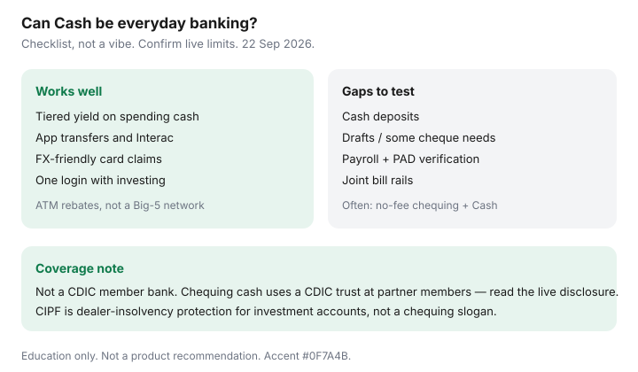

Personal Finance · Canada
Can Wealthsimple Cash Replace Everyday Banking in Canada? A Fee and Access Checklist
Wealthsimple Cash (the chequing-style account in the Wealthsimple app) attracts households that want yield, FX-friendly spending, and one login — then discover they cannot deposit a cash rent float or need a bank draft on Tuesday. The question is not whether the product is “good.” It is whether it can be everyday banking for your habits, or whether it wins as half of a two-account stack. This checklist is Canadian, fee-and-access focused, and date-stamped against public figures used 22 Sep 2026. Confirm live rates and limits before you move payroll.
Habit-fit rate math against EQ Bank and Tangerine lives on EQ vs Wealthsimple vs Tangerine. The no-fee stack and 14-day switch plan cover how to leave a package without breaking PADs.
Disclosure: HISA and fintech cash accounts are offer types. Saving Optimizer may later add partner links. We do not currently claim a partnership with Wealthsimple, EQ Bank, Tangerine, Simplii, or any Big-5 bank. No invented welcome bonuses. Education only — not a recommendation to open or close a specific account.
Key takeaways
- Wealthsimple chequing pays a tiered everyday rate (Core / Premium / Generation on public pages used with the comparison guide) and is built for app-first spending, not branch errands.
- Wealthsimple is not a CDIC member bank. Cash is described as held in trust at CDIC members — read the live disclosure for the combined-coverage claim.
- Common gaps: cash deposits, some draft/cheque needs, and bill setups that still assume a traditional bank PAD. ATM access is typically rebate-based.
- Many households win with no-fee chequing + Wealthsimple Cash, not with a total replacement.
- CIPF is dealer-insolvency protection for investment accounts. Do not treat it as the reason your chequing balance is “safe.”
What Wealthsimple Cash does well (transfers, yield, fees)
Public Wealthsimple chequing materials referenced on the comparison guide (comparison data as of 11 Jun 2026; pages used 21–22 Sep 2026) describe tiered interest: roughly 1.25% Core, 1.75% Premium at $100k assets, 2.25% Generation at $500k, with Core and Premium able to add 0.5% after $2,000 of direct deposit in a 30-day window. There is no monthly package fee in the usual marketing sense. Interac e-Transfer is supported with published limits that can reach high daily ceilings for eligible clients — confirm your limit in-app. ATM fee reimbursement globally appears on their FAQ; FX markup from Wealthsimple is advertised at $0 (network conversion can still apply). Paycheques may arrive up to a day early with direct deposit on their public claims.
For a household that already invests at Wealthsimple, one-app money movement is the real product. Yield on a spending balance beats a Big-5 chequing account that pays nothing — if you will not need the services the Big-5 package was masking.

Gaps: cash deposits, branches, some bill types
Fintech chequing is weak where Canada is still physical. Cash tips, cash rent, or a side-business float that must be deposited same day usually need a Simplii CIBC ATM envelope, a credit-union teller, or a Big-5 branch. Wealthsimple’s public materials describe cheque deposit timelines on the order of several business days — plan, do not surprise yourself before rent. Bank drafts and certified cheques for a condo closing are appointment products elsewhere; do not assume the app mails one overnight without reading the current help article.
Some landlords, clubs, and small vendors still insist on a PAD from a “real bank,” or on cheques. Most modern billers accept Interac or PAD from digital accounts — test each PAD with a $1–$5 verification before you empty the old account. Keep the old account open through two billing cycles, which is the switch-plan rule.
Interac e-Transfer and payroll realities to verify at draft
Before you point payroll at Wealthsimple:
- Confirm your employer’s payroll file accepts the transit and institution numbers Wealthsimple provides.
- Send a test deposit or wait for one full pay cycle before moving every PAD.
- Read your personal Interac send and receive limits in the app — household renovation payments can hit ceilings.
- Autodeposit must be registered to the address you actually use; old autodeposit on a closed email is how money bounces.
Outbound Interac from EQ Bank, for comparison, publishes hard caps on its fees-and-features page ($5,000 / 24 hours, $20,000 weekly, $50,000 monthly on the figures used 21 Sep 2026). Wealthsimple’s “up to $50,000 for eligible clients” language is eligibility-gated. Screenshot your limit.
When a no-fee chequing + Cash combo wins
The combo wins when any of these are true: you deposit cash monthly; you need Scotiabank or CIBC ATM geography without thinking about rebates; you need occasional drafts; two people share bills and want a joint no-fee account with simple overdraft controls; or you are leaving a Big-5 package and refuse to strand a mortgage PAD experiment on day one. Put payroll and fixed PADs on Simplii, Tangerine, or a credit union. Park surplus and travel spending in Wealthsimple if the yield and FX matter. Do not keep thousands idle in a fee package “just in case” — that is the package-exit problem.
| Need | Cash-only stack | Chequing + Cash |
|---|---|---|
| Cash deposits | Poor fit | Use the chequing side |
| Yield on spending balance | Strong | Strong on the Cash sleeve |
| Branch draft / notarized banking | Plan ahead or poor fit | Chequing or credit union appointment |
| Travel FX | Often strong on public FX claims | Same, if spending rides Cash |
| Joint household PADs | Verify joint features first | Often easier on a joint no-fee chequing |
Risk and CDIC/CIRO-style coverage notes (verify at draft)
Three labels get mashed together:
- CDIC — insures eligible deposits at member institutions, generally up to $100,000 per category per member. EQ Bank / Equitable Bank and Tangerine Bank are members.
- Wealthsimple CDIC trust — Wealthsimple Payments / Investments are not CDIC members. Chequing cash is described as held in trust at CDIC-member banks, with a public combined-coverage claim of up to $1 million CAD if spread across at least 10 members ($100,000 each), subject to disclosure rules (pages used 21–22 Sep 2026). Joint-fund treatment follows their FAQ — read it.
- CIPF / CIRO — Canadian Investor Protection Fund covers client assets at a CIRO dealer if the dealer fails, within CIPF limits. It does not insure market losses and is not a substitute for reading which sleeve holds your bill money.
Emergency funds belong in an account you understand on a bad day. Brokerage settlement cash is the wrong “HISA.” See where to park an emergency fund.
An everyday-banking replacement checklist
- List every PAD, payroll, Interac Autodeposit, and cash-deposit habit for 90 days.
- Mark each item: works on Wealthsimple, needs a partner chequing account, or needs a branch.
- Open or keep a no-fee chequing account if any item needs it. Do not close the old bank yet.
- Move payroll on one cycle. Verify. Then move PADs one by one with $1 tests where available.
- Read the CDIC trust disclosure and your e-Transfer limits. Screenshot both.
- Only after two clean billing cycles, drain and close the fee package you meant to leave.
Sources & date stamps
- Wealthsimple chequing / Cash public pages — tiers, DD boost, ATM/FX, CDIC trust framing (comparison data as of 11 Jun 2026; used 21–22 Sep 2026).
- EQ Bank fees-and-features — e-Transfer caps for comparison (used 21 Sep 2026).
- CDIC “What’s covered”; FCAC deposit-insurance overview — member vs provincial vs trust framing (used 22 Sep 2026).
- CIPF / CIRO dealer-insolvency framing — distinguish from chequing CDIC trust (used 22 Sep 2026).
Frequently asked questions
Is Wealthsimple Cash a bank?
No. Wealthsimple’s cash/chequing product is offered through Wealthsimple entities that are not CDIC member banks. Client cash is described as held in trust at CDIC-member institutions. Read the current disclosure for coverage limits and how funds are spread.
Can Wealthsimple Cash replace a Big-5 chequing account?
Sometimes for digital-first households that rarely need cash deposits or branch drafts. Often as a hybrid: Wealthsimple for spending and yield, plus a no-fee chequing account at Simplii, Tangerine, or a credit union for cash and edge cases. Run the checklist before you close the old account.
Does CIPF protect Wealthsimple chequing balances?
Do not assume that. CIPF protects client assets at a CIRO dealer if the dealer becomes insolvent, within CIPF limits. Wealthsimple describes chequing cash as a CDIC trust structure. Brokerage settlement cash is a different sleeve.
What are common access gaps?
Cash deposits, some in-person needs, cheque handling timelines, and bill types that still expect a traditional PAD rail. ATM access is often rebate-based rather than a Big-5 network. Confirm live limits for Interac e-Transfer and payroll direct deposit.
Should I move my emergency fund there?
Only after you understand the CDIC trust disclosure, withdrawal speed, and whether payroll and PADs will actually land. Keep one month of bills liquid somewhere you can access on a bad day. Compare habit fit with the EQ Bank versus Wealthsimple versus Tangerine guide.